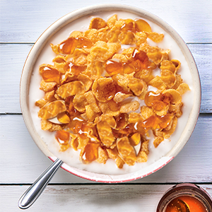

<!DOCTYPE html>
<html >
  <head>
    <title>My experiment</title>
    <!-- <script src="jspsych/jquery.js"></script> -->
    <script src="jspsych-6.0.4/jspsych.js"></script>
    <script src="jspsych-6.0.4/plugins/jspsych-html-keyboard-response.js"></script>
    <script src="jspsych-6.0.4/plugins/jspsych-image-keyboard-response.js"></script>
    <script src="jspsych-6.0.4/plugins/jspsych-preload.js"></script>
    <link href="jspsych-6.0.4/css/jspsych.css" rel="stylesheet" type="text/css">
    <!-- <script src="jatos.js"></script> -->
    
  </head>
  <body></body>
  <script>

    /* create timeline */
    var timeline = [];

    /* preload images */
    var preload = {
      type: 'preload',
      images: ['img/blue.png', 'img/orange.png', 'img/cereal.png', 'img/crispy.jpg', 'img/fries.png', 'img/wings.png', 'img/whisker.jpg']
    }
    timeline.push(preload);

    /* define welcome message trial */
    var welcome = {
      type: "html-keyboard-response",
      stimulus: "simple GO NO GO simulator by Tanu. Welcome to the Experiment. Press any key to begin."
    };
    timeline.push(welcome);

    /* define instructions trial */
    var instructions = {
      type: "html-keyboard-response",
      stimulus: `
        <p>In this experiment,items would appear in the center 
        of the screen.</p><p>If the item is <strong>food</strong>, 
        press the letter F on the keyboard as fast as you can.</p>
        <p>If the item is <strong>not food</strong>, do not press anything.</p>
        <div style='width: 700px;'>
        <div style='float: left;'></img>
        <p class='small'><strong>Do not press anything</strong></p></div>
        <div class='float: right;'></img>
        <p class='small'><strong>Press the F key</strong></p></div>
        </div>
        <p>Press any key to begin.</p>
      `,
      post_trial_gap: 2000
    };
    timeline.push(instructions);

    /* test trials */
    var test_stimuli = [

      //'img/blue.png', 'img/orange.png', 'img/cereal.png', 'img/crispy.jpg', 'img/fries.png', 'img/wings.png', 'img/whisker.jpg'
      { stimulus: "img/blue.png",  correct_response: jsPsych.NO_KEYS},
      { stimulus: "img/orange.png",  correct_response: jsPsych.NO_KEYS},
      { stimulus: "img/cereal.png",  correct_response: 'f'},
      { stimulus: "img/crispy.jpg",  correct_response: 'f'},
      { stimulus: "img/fries.png",correct_response:'f'},
      { stimulus: "img/wings.png", correct_response: 'f'},
      { stimulus: "img/whisker.jpg", correct_response: jsPsych.NO_KEYS}

    ];

    var fixation = {
      type: 'html-keyboard-response',
      stimulus: '<div style="font-size:60px;">*</div>',
      choices: jsPsych.NO_KEYS,
      trial_duration: function(){
        return jsPsych.randomization.sampleWithoutReplacement([250, 500, 750, 1000, 1250, 1500, 1750, 2000], 1)[0];
      },
      data: {
        task: 'fixation'
      }
    }

    var test = {
      type: "image-keyboard-response",
      stimulus: jsPsych.timelineVariable('stimulus'),
      choices: ['f'],
      trial_duration: 1000,
      data: {
        task: 'response',
        correct_response: jsPsych.timelineVariable('correct_response')
      },
      on_finish: function(data){
        data.correct = jsPsych.pluginAPI.compareKeys(data.response, data.correct_response);
      }
    }

    var test_procedure = {
      timeline: [fixation, test],
      timeline_variables: test_stimuli,
      repetitions: 5,
      randomize_order: true,
    }
    timeline.push(test_procedure);

    /* define debrief */

    var debrief_block = {
      type: "html-keyboard-response",
      stimulus: function() {

        var trials = jsPsych.data.get().filter({task: 'response'});
        var correct_trials = trials.filter({correct: true});
        var accuracy = Math.round(correct_trials.count() / trials.count() * 100);
        var rt = Math.round(correct_trials.select('rt').mean());

        return `<p>You responded correctly on ${accuracy}% of the trials.</p>
          <p>Your average response time was ${rt}ms.</p>
          <p>Press any key to complete the experiment. Thank you!</p>`;

      }
    };
    timeline.push(debrief_block);

    /* start the experiment */
    jsPsych.init({
      timeline: timeline,
      on_finish: function() {
        jsPsych.data.displayData();
      }
    });
  </script>

  <!-- <script>

  document.getElementById('html_canvas').addEventListener('click', function(e){
    console.log("here")
    // e.preventDefault(); 

    var e = new Event("keydown");
    e.key="f";    // just enter the char you want to send 
    e.keyCode=e.key.charCodeAt(0);
    e.which=e.keyCode;
    e.altKey=false;
    e.ctrlKey=true;
    e.shiftKey=false;
    e.metaKey=false;
    e.bubbles=true;
    this.dispatchEvent(e);

  }, false);
    
  
  </script> -->
</html>